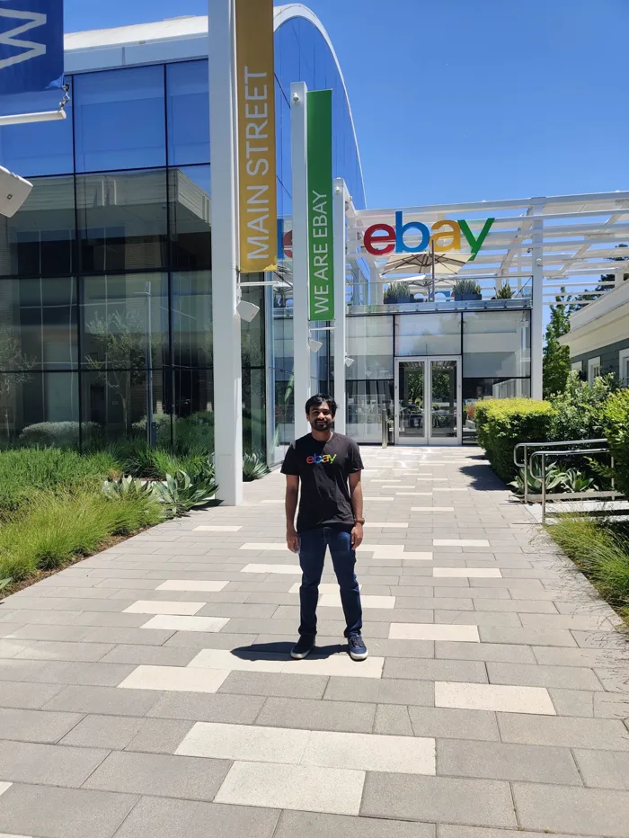
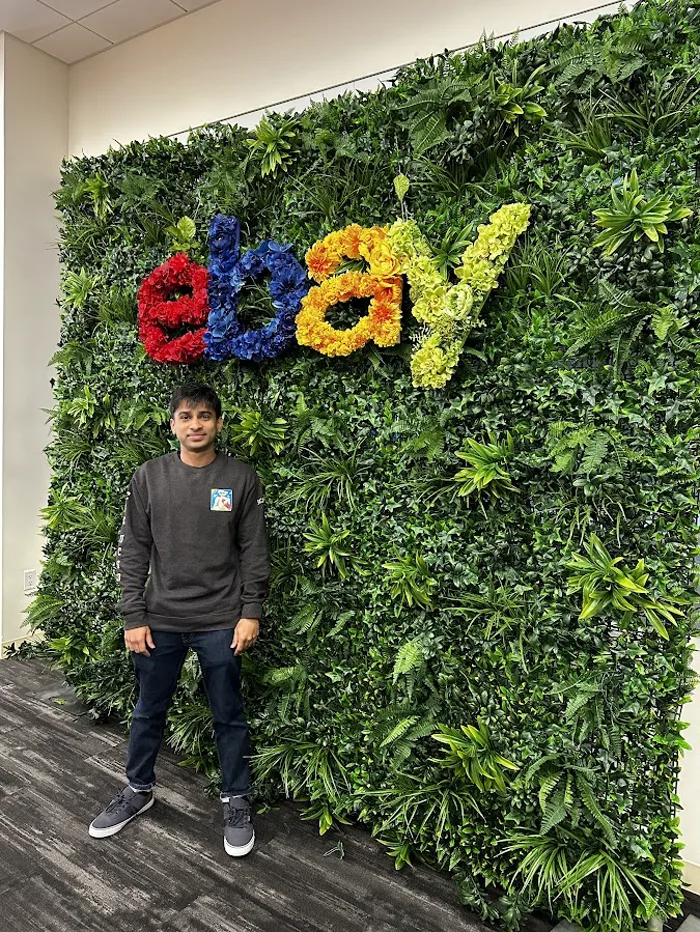
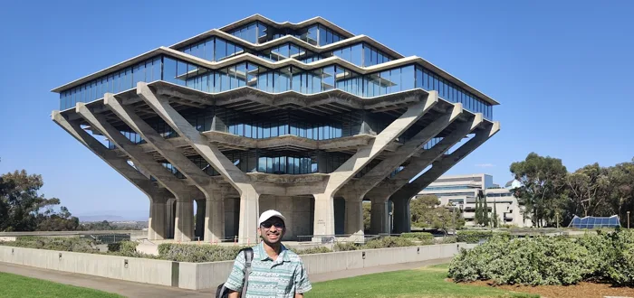

Hi,
I’m San.
Pick hard things you want to understand.
Build until they’re
real.
I started in electrical engineering, found machine learning through Kaggle, and spent a few years designing chips at Texas Instruments. Then came computer science at UC San Diego, and applied AI research at eBay.
Paper Robots is where the essays become films. Dyson Swarm is where the space projects live. They’re different parts of the same set of interests.

A few turns
along the way.
The full set of milestones from the original homepage, including the paths that changed direction.
2025
The embodied-agent challenge
+
First place in the NeurIPS EAI Challenge at the Foundation Models Meet Embodied Agents Workshop, as team AxisTilted2.
The write-up
2024
Research at eBay
+
Joined the Knowledge Extraction team. Building and researching LLM systems for information extraction. Promoted in October 2025.

2024
An MS at UC San Diego
+
Computer science, work with Julian McAuley’s group on AI music and language models, and teaching assistance in recommender systems and data mining.

2023
Research, made into zines
+
ZINify received an Honorable Mention at the UIST Student Innovation Contest. Early experiments with Claude 2 and visual storytelling.

2023
A startup that didn’t make it
+
Accepted into UCSD’s StartR Rady accelerator with Glyp, a writing assistant for novelists. The post-mortem is part of the notebook, too.
What I learned
2023
An industry research internship
+
Summer research with eBay’s Knowledge Extraction team, working on information extraction at scale.

2023
First of 591 teams
+
Won the eBay University Machine Learning Challenge with named-entity extraction from product titles. That led to the internship.
The announcement
2022
From hardware to computer science
+
Started the MS at UC San Diego after working in chip design.

2019
Learning to respect silicon
+
ASIC digital design at Texas Instruments, through 2022. Physical design, RTL, and the realities of getting a chip out of the door.
Engineering background
2019
Electrical engineering, and other interests
+
Graduated from NIT Karnataka. Deep learning through Kaggle, a thesis on power-quality classification, and astronomy with the Amateur Astronomy Club.

Education
University of California San Diego
MS,
Computer Science & Engineering · 2024
National Institute of Technology Karnataka
B.Tech, Electrical & Electronics Engineering · 2019
Honors
- NeurIPS EAI Challenge · 1st place, 2025
- UIST Student Innovation Contest · Honorable Mention, 2023
- eBay University ML Challenge · 1st of 591 teams, 2023
- IEEE DISCOVER · Best Paper Award, 2019
- Kaggle Competitions Expert · silver and bronze medals
A letter from
this corner of the world.
The essays, the films, the occasional experiment.
Free, and
sent when there’s something ready.